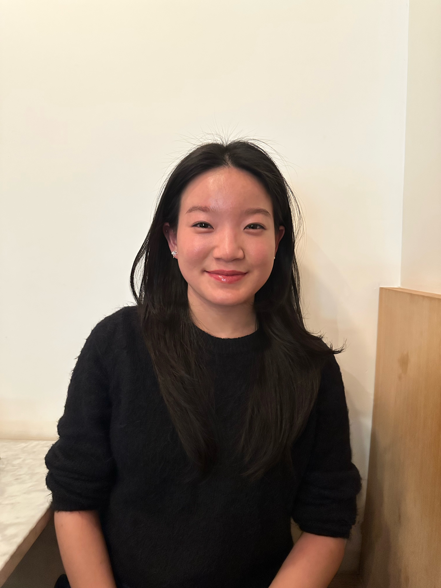

I’m a Music Technology student at NYU Steinhardt with a focus on studio recording, film scoring, and post-production audio. I have over two years of professional studio experience as an assistant engineer and have served as lead engineer on select recording projects. My skill set includes working with analog and digital consoles, microphones, and outboard gear, as well as proficiency in Pro Tools, Logic Pro, and Ableton Live. Check out some of my projects below!
victoriazenghuiyang@gmail.com | 347-866-1137 | LinkedIn
May 2026: Original composition and sound design for the Wwise Adventure Game. Composition and sound design were completed in Logic Pro and Ableton Live and implemented into Wwise.
April 2026: Three different sonic branding options utilizing sound design. Designed, edited, and mixed in Pro Tools.
November 2025: Original composition for a scene from the 2016 sci-fi film Arrival, using virtual instruments, synthesizers, recorded sounds, and sample libraries. Composed in Logic Pro and mixed in Pro Tools.
December 2025: Original music and sound design for a scene from the 2018 sci-fi film Spider-Man: Into the Spider-Verse, using virtual instruments, synthesizers, recorded sounds, and sample libraries. Music composed in Ableton Live and mixed alongside the sound design in Pro Tools.
October 2024: Used recorded foley, sound libraries, and found sounds for the sound design for an episode from The Pink Panther.
October 2024: Edited the podcast recordings by cleaning dialogue tracks, removing background noise, and ensuring overall clarity and consistency. Sourced and incorporated curated clips from Maggie Smith’s films and layered in film score excerpts to enhance narrative moments.